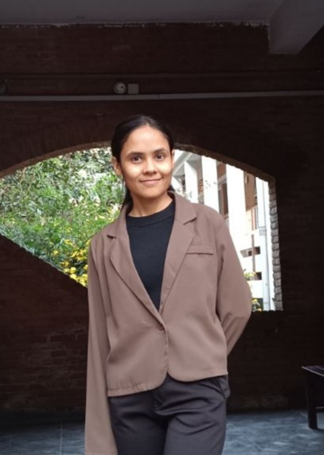

01
Climate Extremes & Environmental Data Science
Data-driven analysis of climate extremes, environmental variability, and impacts using statistical and machine learning approaches.
ENVIRONMENTAL ENGINEERING • GIS • DATA SCIENCE
I am interested in GIS, remote sensing, hydrology, environmental data science, climate risk, and machine learning for understanding environmental and climate-related challenges.

ABOUT ME
I am an Environmental Engineering graduate with an interest in understanding environmental systems using geospatial technologies, environmental modeling, and data-driven methods.
My academic background has given me experience in hydrology, water and wastewater systems, environmental analysis, GIS, and remote sensing. I am particularly interested in applying computational approaches to environmental and climate-related problems.
Environmental Engineering
Kathmandu University
GPA: 3.39 / 4.00
RESEARCH
My interests lie at the intersection of environmental engineering, Earth observation, geospatial analysis, and environmental data science.
Data-driven analysis of climate extremes, environmental variability, and impacts using statistical and machine learning approaches.
Using satellite observations, GIS, and geospatial modeling to investigate environmental and landscape processes.
Exploring hydrological processes, water quality, and environmental systems through spatial and data-driven approaches.
Understanding climate-related hazards and environmental risks, particularly in vulnerable regions.
PROJECTS
THESIS • GIS
Suitability analysis of potential landfill sites in Bharatpur Metropolitan City using AHP, GIS, and multi-criteria evaluation.
EARTH OBSERVATION
Analysis of land surface temperature, rainfall, and environmental patterns using satellite and geospatial datasets.
MACHINE LEARNING
Machine learning and deep learning experiments exploring prediction, classification, and computer vision applications.
SKILLS
GIS · QGIS · Remote Sensing · Google Earth Engine · Spatial Analysis
Python · Pandas · NumPy · Matplotlib · Jupyter
Scikit-learn · TensorFlow · Keras · Computer Vision
Hydrology · Water Quality · Wastewater · Climate Analysis